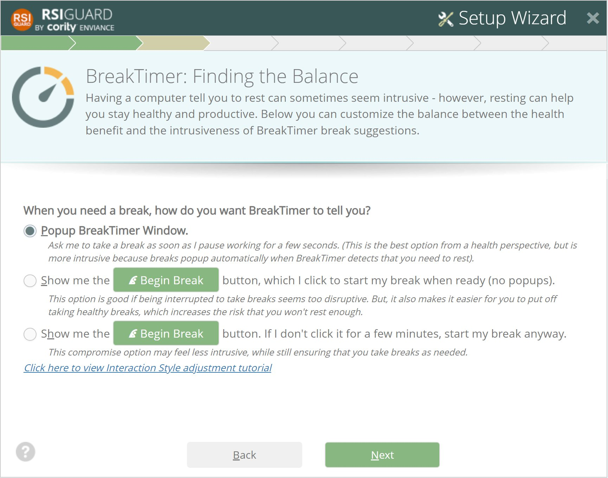

This screen lets you adjust how BreakTimer asks you to take breaks. In RSIGuard, this is referred to as BreakTimer's Interaction Style.
Click here to watch a video about this important setting.

« Back | Next Wizard Slide »